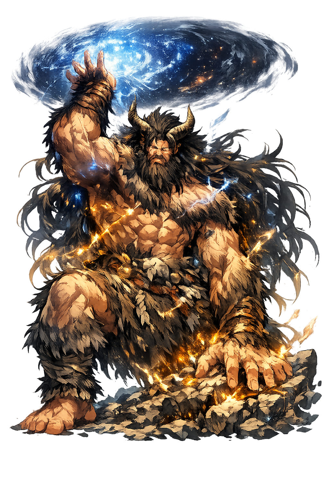

The Authentic Orthography
Creation, Separation, Foundation · 'Coiled antiquity' (盤古), the giant who split heaven from earth

Unicode restoration and ASCII comparison
Pángǔ
The name survives only in scholarly transliteration. Pángǔ is the standard Chinese romanisation, documented in academic sources — “'Coiled antiquity' (盤古), the giant who split heaven from earth”. Its acute stress marks preserve distinctions lost in plain ASCII.
The original script for this chinese name has not yet been added to PUNICODEX. The form shown is a scholarly transliteration.
pangu
Reduced to plain pangu, the name loses everything that made it specific: acute stress marks. What remains is an ASCII string that machines can parse but that no longer speaks with its original voice.
Pángǔ
The Unicode restoration recovers what ASCII flattened. Pángǔ restores acute stress marks, returning the name to its original written dignity. The domain encodes to Punycode, but the browser displays the truth.
Pángǔ.com → xn--png-ela13j.com
The non-ASCII characters in Pángǔ are encoded while the ASCII remains visible. To the DNS, it is Punycode. To humanity, it is Pángǔ.
How Pángǔ is preserved in writing
A bespoke provenance study for Pángǔ is being prepared by the PUNICODEX scholarly team.
Contribute scholarly provenance →How Pángǔ was spoken
The Egg, the Eighteen Thousand Years, and the Body of the World
Pángǔ is China's creation made flesh: the giant who grew for eighteen thousand years inside the cosmic egg, pushed heaven and earth apart with his own body, and — dying at last — became the world itself: his eyes the sun and moon, his breath the wind, his voice the thunder.
Chaos like a hen's egg — and Pángǔ born within it, the first form in the formless.
Heaven rose ten feet daily, earth thickened ten feet, and he grew between them — 18,000 years of pushing.
His body becomes the world: eyes to sun and moon, limbs to mountains, blood to rivers.
Folk art arms him with the tools of separation — the first worker, carving sky from stone.
Stories of Pángǔ
Pángǔ's myth exists in two sentences of immense consequence, recorded by Xú Zhěng in the 3rd century CE — and expanded by a civilization into its canonical account of how the world began.
Xú Zhěng's Sānwǔ lìjì gives the founding text: "Heaven and earth were chaos like a hen's egg, and Pángǔ was born within it. After eighteen thousand years, heaven and earth opened: the bright, light qì rose to become heaven; the dark, heavy qì sank to become earth. Pángǔ stood between them, changing nine times daily — heaven rising ten feet a day, earth thickening ten feet, and Pángǔ growing ten feet — for eighteen thousand years more."
When the separation was fixed, Pángǔ died — and the transformation began: his breath became wind and cloud, his voice thunder, his left eye the sun and his right the moon, his four limbs the four sacred mountains, his blood the rivers, his veins the roads, his flesh the soil, his hair the stars, his skin and body-hair grass and trees, his sweat rain — and, in the most anthropologically piquant line, his fleas and lice, quickened by the wind, became the black-haired people.
The myth's strangest fact is its date: no pre-Han text mentions Pángǔ, and scholars trace his entry through southern traditions — the Yao and Miao genealogies of the dog-ancestor Pán Hù, phonetically adjacent — absorbed and cosmicized in the Wei-Jin centuries. China's canonical creation is thus a relative newcomer, adopted so completely that every schoolchild now learns it as the oldest story.
Pángǔ is the god of the long work: eighteen thousand years of pushing, unnoticed, until the sky stayed up on its own. He never saw the world he made — he became it. He asks of everyone engaged in slow, unglamorous creation: what are you growing between the heaven and the earth of your time — and will it stand when you are done?
Enter Extended Lore